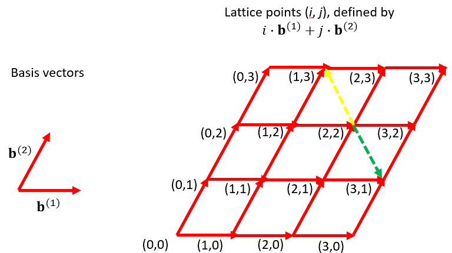

In this lab I want you to complete an implementation of the simplest interesting Lattice Gas Model in two dimensions - the HPP model described initially in the lecture. I will also provide my own implementation of the more complex FHP model, for you to experiment with.
A Lattice Gas on a square grid - the HPP model
As explained in the lecture, the Hardy, Pomeau and de Pazzis model is defined on a square grid. This makes implementation of streaming and collisions particularly simple, and I assume you shouldn't have too much trouble implementing them in the time frame of this lab.
Once again I will provide you with an outline program, including possible code for initialization and display. Please download the code at HPP.java.
The main method of in the provided outline code looks like this:
public static void main(String args []) throws Exception {
// initialize - populate a subblock of grid
for(int i = 0; i < NX/4 ; i++) {
for(int j = 0; j < NY/4 ; j++) {
boolean [] fin_ij = fin [i] [j] ;
for(int d = 0 ; d < q ; d++) {
if(Math.random() < DENSITY) {
fin_ij [d] = true ;
}
}
}
}
display.repaint() ;
Thread.sleep(DELAY) ;
for(int iter = 0 ; iter < NITER ; iter++) {
// Collision
for(int i = 0; i < NX ; i++) {
for(int j = 0; j < NY ; j++) {
boolean [] fin_ij = fin [i] [j] ;
boolean [] fout_ij = fout [i] [j] ;
// default, no collisions case:
fout_ij [0] = fin_ij [0] ;
fout_ij [1] = fin_ij [1] ;
fout_ij [2] = fin_ij [2] ;
fout_ij [3] = fin_ij [3] ;
// please add collisions as per lecture!
}
}
// Streaming
for(int i = 0; i < NX ; i++) {
int iP1 = (i + 1) % NX ;
int iM1 = (i - 1 + NX) % NX ;
for(int j = 0; j < NY ; j++) {
int jP1 = (j + 1) % NY ;
int jM1 = (j - 1 + NY) % NY ;
// no streaming case:
fin [i] [j] [0] = fout [i] [j] [0] ;
fin [i] [j] [1] = fout [i] [j] [1] ;
fin [i] [j] [2] = fout [i] [j] [2] ;
fin [i] [j] [3] = fout [i] [j] [3] ;
// please add streaming as per lecture!
}
}
System.out.println("iter = " + iter) ;
display.repaint() ;
Thread.sleep(DELAY) ;
}
}
I suggest you implement the streaming step first, as explained around
slide 15 in the lecture. To make your life earlier I have precomputed
i and j (corresponding to x and y) indices
of neighbouring sites, under the assumption of wraparound at the edges
of the lattice. The index arithmetic is identical to that given in
the original Game of Life code you used in the Parallel Programming module.
Before moving on to the collision stage, test and debug you streaming code.
When the streaming behaviour looks correct, fill in the collision code. I have already given you pseudocode on slide 22 of the lecture.
If it isn't obvious by inspection of the code running with the given initial conditions whether particles are behaving as they should, you can set up initial conditions with (e.g.) just two particles, where you stage collisions. For example replace initalization code above by just:
// initialize - staged head on collision in x direction.
fin [NX/2 + 1] [NY/2] [0] = true ;
fin [NX/2 - 1] [NY/2] [1] = true ;
You may want to increase the value of DELAY so you can see
what is going on here.
Staging such collisions amounts to a kind of "unit testing" of the
collision code.
Once you are confident streaming and collision are working as intended, you may want to experiment with slightly different initial conditions, controlled by the ranges of the initialization loop and the DENSITY parameter.
If you preferred the colour scheme in the lecture, with arrows in different directions coloured differently, comment/uncomment the appropriate setColor commands in the Display class.
An approach to coding the FHP model
The more realistic 2d models on triangular lattices present more of a challenge in terms of coding. Given the time available, I have simply provided some code for you to inspect and experiment with in this class FHP.java.
The triangular lattice is generated from two unit-length "basis vectors" with x, y components [1, 0] and [0.5, 0.5 sqrt(3)] respectively, as illustrated here:

Most of the non-trivial geometry here is encoded in the Display class and also in the streaming code.The states 0 and 1 correspond to motion in negative and positive directions the horizontal (b(1)) direction. The states 2 and 3 correspond to motion in the negative and positive b(2) directions. The states 4 and 5 correspond to motion indicated by the yellow and green arrows in the figure above. (For avoidance of confusion, note that in the figure above and all figures in the PowerPoint slides the y dimension increases upwards; on the display generated by the program the y dimension increases downwards - unfortunately you have to mentally invert going between figures and program display.)
The implication of this for the streaming step is that whilst the streaming of states 0 through 3 are much as in the HPP case, that for states 4 and 5 is more complicated. Note in the figure above how these states connect site (2, 2), for example, to (1, 3) and (3, 1).
The collision step, whilst considerably more complicated than the HPP case, because of the much larger number of collistion types to consider, is not much affected by the geometry beyond knowing state 0 is opposite state 1, etc. The three way collisions need slightly more careful thought. To convince yourself they are correct - in accordance with slide 27 of the lecture - you may want to try "unit test" cases like this:
// initialize - staged three way collision
fin [NX/2 - 1] [NY/2] [1] = true ;
fin [NX/2] [NY/2 + 1] [2] = true ;
fin [NX/2 + 1] [NY/2 - 1] [5] = true ;
for the initial conditions.
Exercises
Experiment further with these codes.
To get something more like recognizable fluid dynamics you might want to strip out the elaborate plotting of arrow-like triangles to display the full state, and just display the particle densities at points as calculated on slide 11 of the lecture, on some kind of grey scale. Even better, average this density over small groups of neighbouring cells. You should then be able to move to simulations on much larger lattices.
Encoding the local state in terms of a short array of boolean variables isn't necessary the best way of doing things. A more efficient way is usually to encode the local velocity states in terms of the bits of a single int variable, and use bitwise operations for manipulating them. By analogy with similar techniques used in computational statistical physics this is sometimes called multi-spin encoding. How would you change the HPP code, for example, to use this technique?